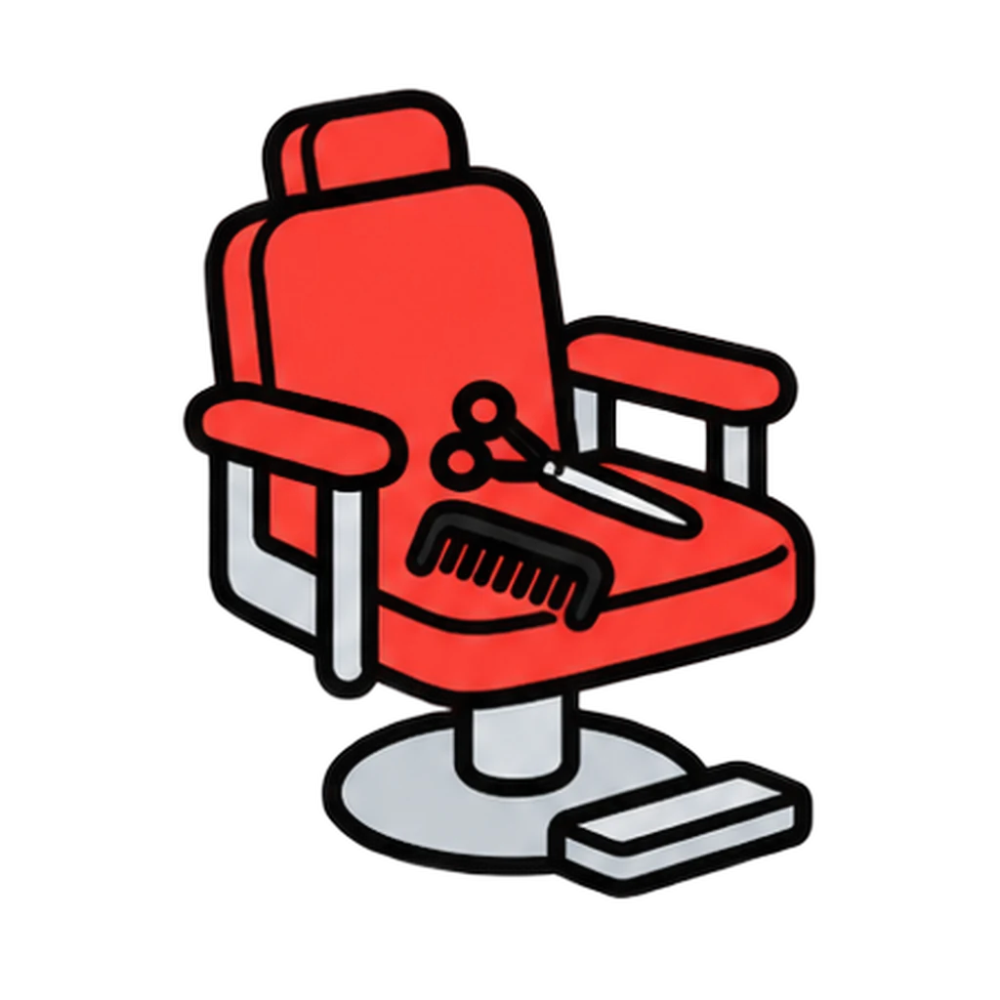
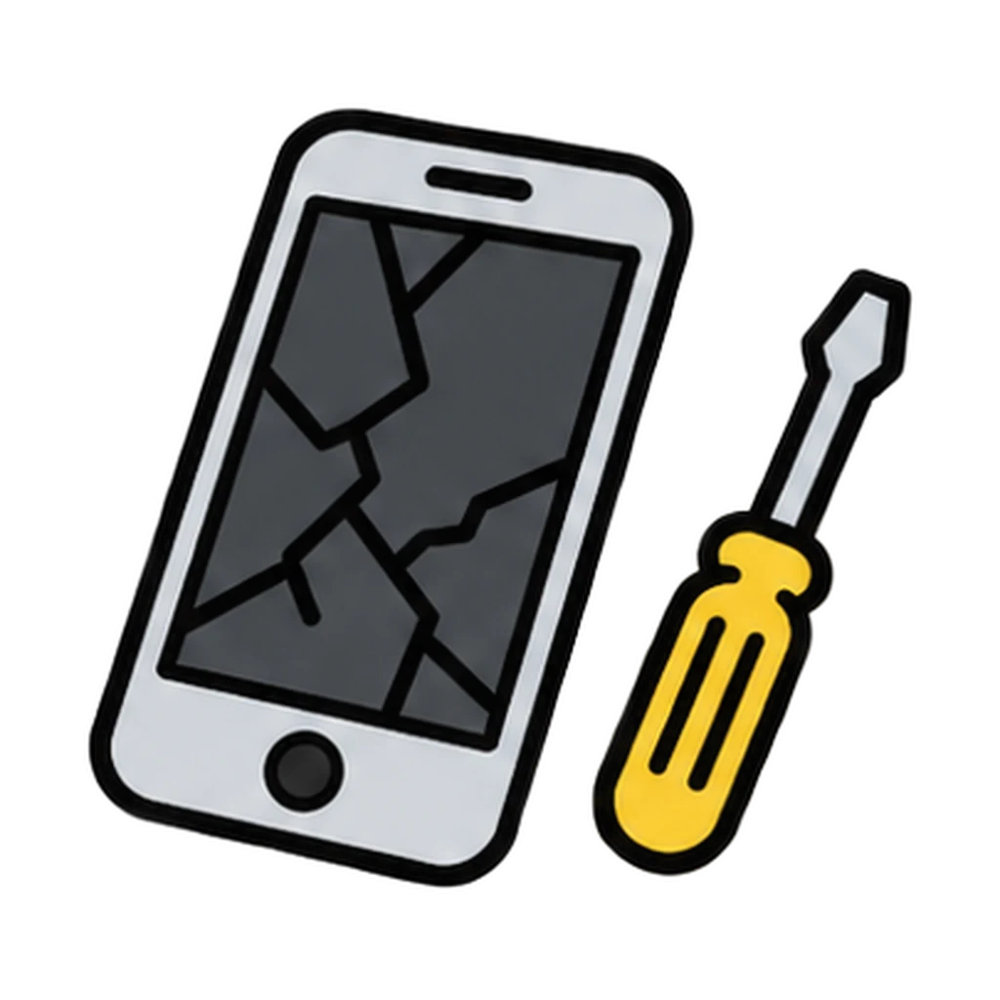
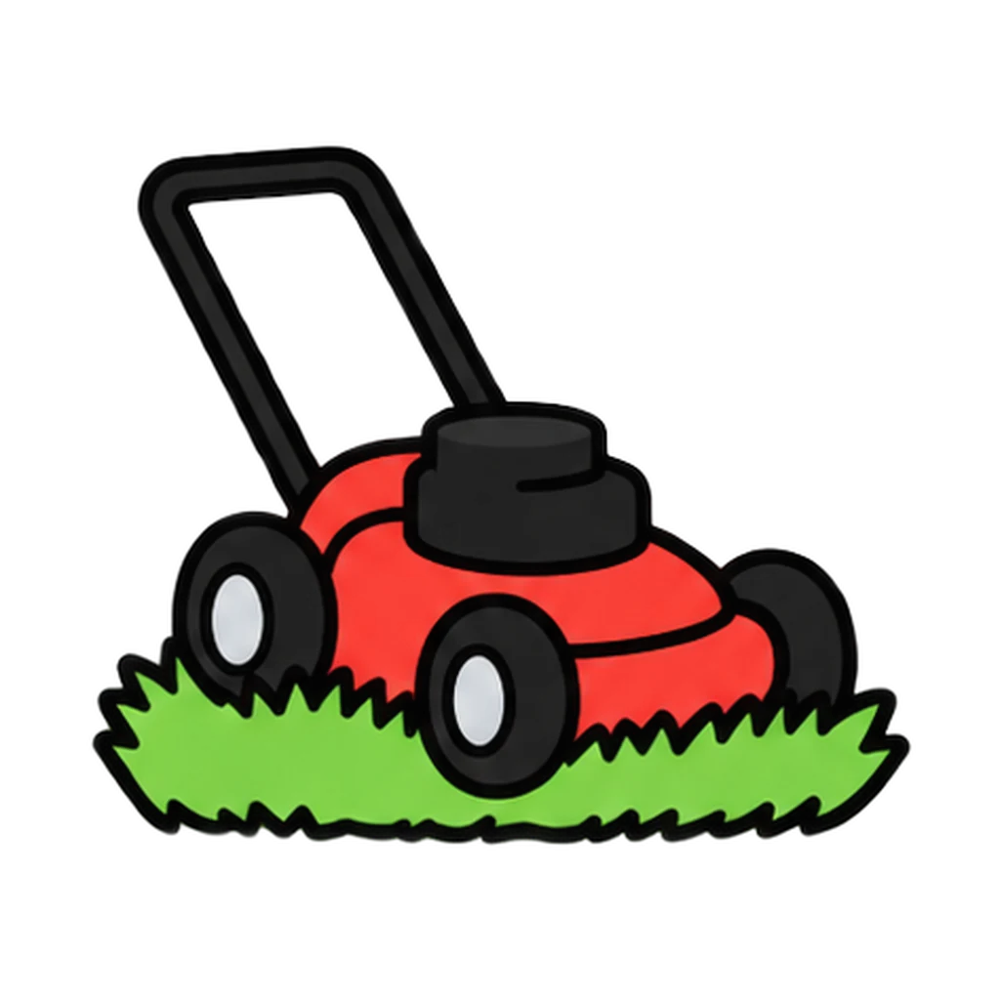
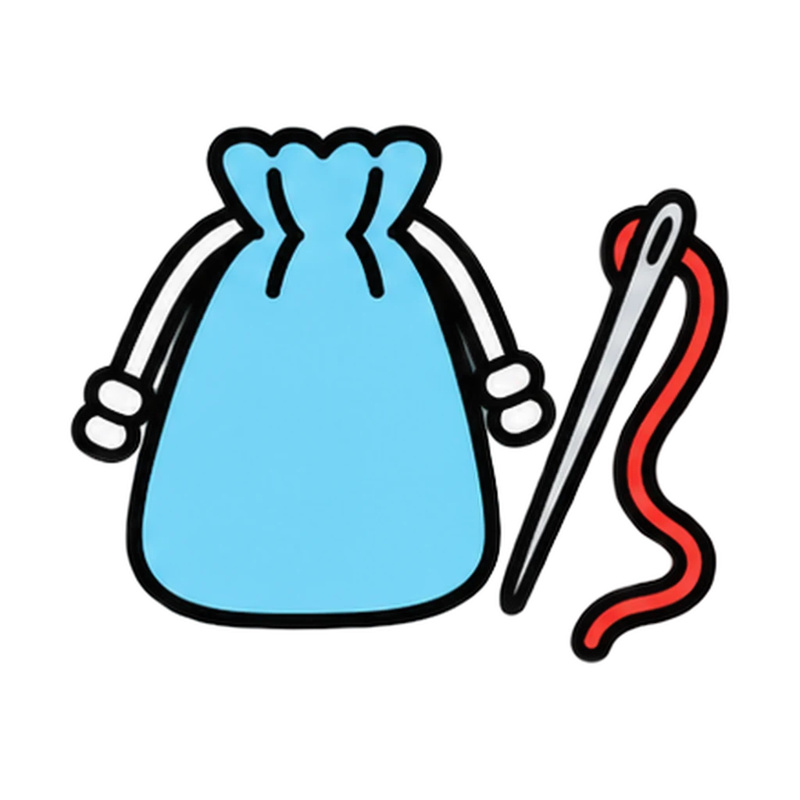
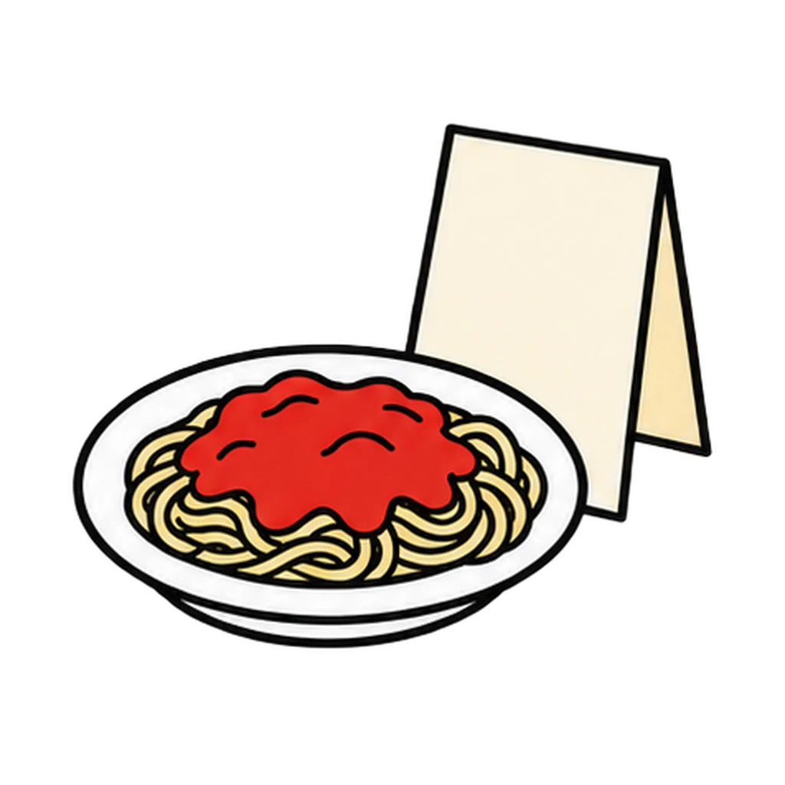
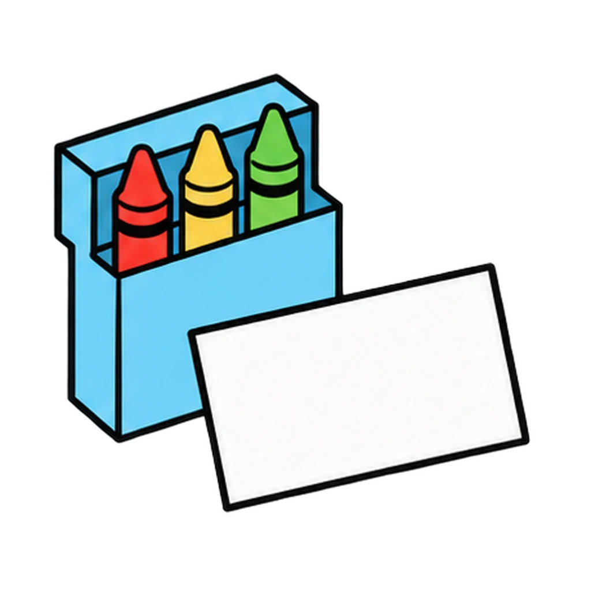
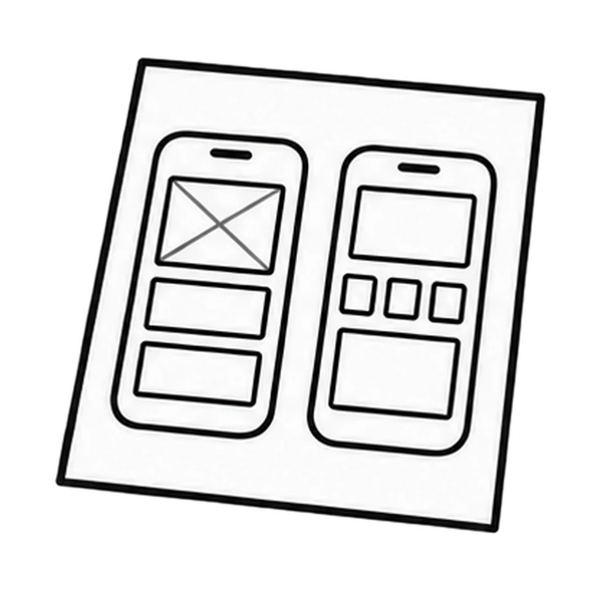

Reviews Lesson 7.6, Lesson 7.7, Lesson 7.10. Reviews the first half of Lesson 7.6 (the problem behind five real businesses, who has it, product versus service, who pays versus who uses) and the filter question 2 move from Lesson 7.7 and Lesson 7.10 (what are you physically handing a judge, and which unit's skill does the prototype use). Use round 1 as the do now of Lesson 7.7 so the brainstorm starts with problems, not products; use round 2 at the start of Lesson 7.10 Day 1 during the four-gate scan for any team that is still holding an idea instead of a project. Grade 6 plays round 1 only.
Problem Finder
A business picture appears. Tap the problem it solves, then who has that problem. Then a too-big idea appears, and you tap the narrowed version a judge could hold and the unit whose skill the prototype uses.
How to play
- Customer means the person who pays. It is not always the person who uses it.






